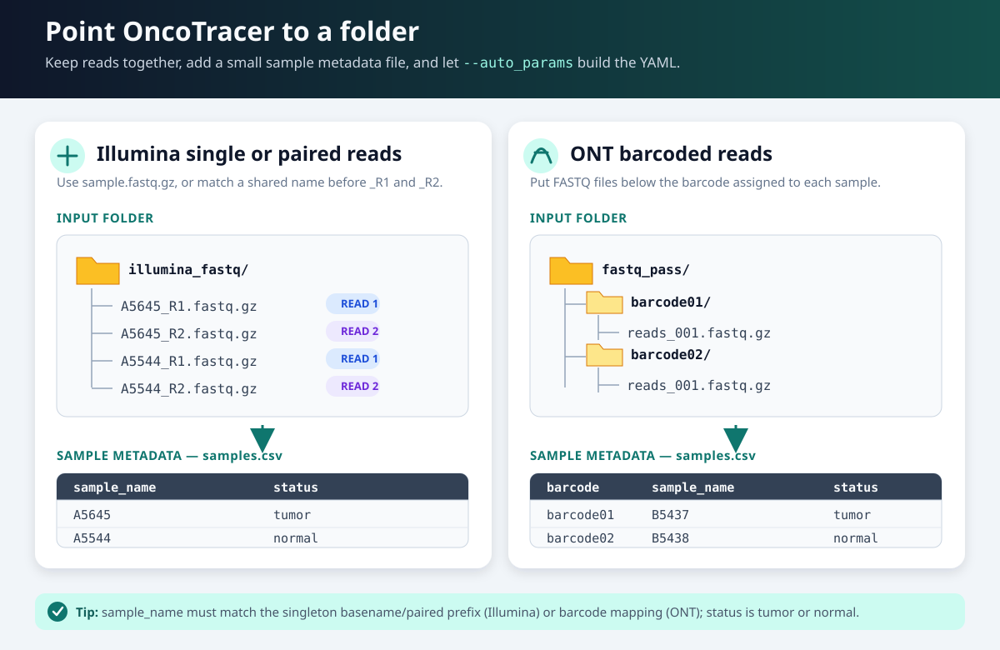

Automatic Setup from a Reads Folder¶
--auto_params is the recommended default for configuring your own FASTQs. You provide:
- a folder containing the reads; and
- a small table that maps each sample to
TUMORorNORMAL.
OncoTracer checks the expected layout and writes a runnable YAML file. For Illumina, it also writes the single-end or paired-end FASTQ samplesheet.

Configuration step, not analysis
--auto_params creates configuration files and then stops. It does not align reads or call CNAs. After it finishes, use the generated YAML in the real analysis command shown below.
Why Automatic Setup creates a YAML¶
Automatic Setup first checks and matches the input files. For Illumina, it saves the FASTQ-to-sample matches in a samplesheet. It saves that samplesheet path, the results path, and the analysis settings in a readable YAML file. The real Nextflow command reads the YAML with -params-file, so you do not have to retype every path and option.
{kind=link}
The YAML is a saved instruction sheet, not sequencing data and not an analysis result. Automatic Setup writes it; you can inspect it; the next command uses it to start the analysis. For Illumina, a separate generated samplesheet connects each sample to its FASTQ file or R1/R2 pair. Select a linked diagram or terminal image below to open it full size.
Before you begin¶
Install the requirements, clone OncoTracer, and enter the repository:
git clone https://github.com/cfarkas/oncotracer.git # skip this line if you already have a current clone
cd oncotracer # main.nf is here; run all commands from this directory
nextflow -version # verify Nextflow
Use absolute paths. Find one with realpath:
realpath /path/to/my_reads # print the absolute path to the reads folder
Choose the section matching your sequencer.
Illumina step by step¶
1. Organize single-end files or paired reads¶
For single-end data, put exactly one gzip-compressed file per sample directly inside one folder. Its basename must exactly equal the sample name:
/data/study42/illumina_fastq/
├── A5645.fastq.gz
├── A5544.fastq.gz
└── B5437.fastq.gz
Supported exact single-end names are <sample>.fastq.gz and <sample>.fq.gz.
For paired-end data, put exactly one R1 and one R2 per sample in the folder. Keep the sample prefix identical:
/data/study42/illumina_fastq/
├── A5645_R1.fastq.gz
├── A5645_R2.fastq.gz
├── A5544_R1.fastq.gz
├── A5544_R2.fastq.gz
├── B5437_R1.fastq.gz
└── B5437_R2.fastq.gz
Supported pair names include:
A5645_R1.fastq.gzandA5645_R2.fastq.gz;A5645_1.fastq.gzandA5645_2.fastq.gz;- the same patterns ending in
.fq.gz.
The text before _R1/_R2 or _1/_2 must exactly match sample_name in the table. The automatic detector expects one exact singleton or one pair per sample in the top level of the reads folder; it does not recursively combine lane files. Do not mix single-end and paired-end rows in one invocation.
2. Create the sample table¶
Open a new CSV file:
nano /data/study42/illumina_fastq/samples.csv # create the sample-to-status table
Type these headers and one row per sample:
sample_name,status
A5645,TUMOR
A5544,NORMAL
B5437,TUMOR
In nano, save with Ctrl+O, press Enter to confirm the filename, and exit with Ctrl+X.
sample_nameis the exact single-end basename or paired FASTQ filename prefix.statusis case-insensitive but must beTUMORorNORMAL.- Use short unique names containing letters, numbers,
_, or-; avoid spaces.
3. Generate the Illumina YAML and samplesheet¶
Run from the cloned oncotracer directory:
nextflow run main.nf --auto_params \
--mode illumina \
--reads_folder /data/study42/illumina_fastq \
--sample_table /data/study42/illumina_fastq/samples.csv
Before reporting success, the generator requires either one exact single-end file for every row or one R1/R2 pair for every row, and runs gzip -t on every file. It stops if an input is missing, corrupt, ambiguous, or if layouts are mixed.
When the task finishes, list the generated files:
ls -1 /data/study42/illumina_fastq/oncotracer_config
{kind=link}
What success looks like. The two files appear in oncotracer_config, while the result folder remains empty of analysis outputs. The characters in brackets and the Nextflow progress layout can differ.
By default it creates:
/data/study42/illumina_fastq/
├── oncotracer_config/
│ ├── illumina.auto.yml
│ └── illumina.samplesheet.csv
└── oncotracer_results/
4. Inspect what was generated¶
Display both files:
sed -n '1,120p' /data/study42/illumina_fastq/oncotracer_config/illumina.auto.yml # show the run YAML
sed -n '1,20p' /data/study42/illumina_fastq/oncotracer_config/illumina.samplesheet.csv # show detected FASTQ mappings
The generated YAML will look like this. This box is an annotated YAML example, not a terminal command:
mode: illumina # choose Illumina processing
lpwgs_root: /data/study42/illumina_fastq # common input/output parent mounted into the container
outdir: /data/study42/illumina_fastq/oncotracer_results # final output directory
illumina_samplesheet: /data/study42/illumina_fastq/oncotracer_config/illumina.samplesheet.csv # generated FASTQ table
illumina_analysis_type: solid_biopsy # SAMURAI analysis preset
illumina_caller: qdnaseq # CNA caller used for Illumina
illumina_binsize_kb: 100 # copy-number bin size in kilobases
run_cna_classifier: false # optional classifier/pathology reporting is off
cna_classifier_sample_set: broad_cancer # classifier context used if enabled
cna_classifier_profile: conda # nested classifier runtime
pathology_csv: null # no pathology table supplied
pathology_use_biomed_models: true # default optional pathology-model setting
pathology_biomed_local_files_only: false # default model file policy
force: false # protect an existing real-project output directory
The generated samplesheet contains absolute paths:
sample,fastq_1,fastq_2,status
A5645,/data/study42/illumina_fastq/A5645_R1.fastq.gz,/data/study42/illumina_fastq/A5645_R2.fastq.gz,tumor
A5544,/data/study42/illumina_fastq/A5544_R1.fastq.gz,/data/study42/illumina_fastq/A5544_R2.fastq.gz,normal
B5437,/data/study42/illumina_fastq/B5437_R1.fastq.gz,/data/study42/illumina_fastq/B5437_R2.fastq.gz,tumor
For a single-end folder, the same generated table has an empty third field, for example:
sample,fastq_1,fastq_2,status
A5645,/data/study42/illumina_fastq/A5645.fastq.gz,,tumor
Classifier and pathology-model options supplied to the --auto_params command are written into the YAML, making the later real run self-contained. The Full Tutorial demonstrates this with CNA-only clinician-facing reports and no pathology table.
5. Run the analysis¶
nextflow run main.nf --docker \
-params-file /data/study42/illumina_fastq/oncotracer_config/illumina.auto.yml \
-resume
-resume reuses unchanged completed tasks if a run is repeated or interrupted.
ONT step by step¶
1. Organize barcode folders¶
Point --reads_folder at the fastq_pass directory. Put one or more .fastq, .fq, .fastq.gz, or .fq.gz files directly inside each barcode directory:
/data/study42/fastq_pass/
├── barcode01/
│ └── reads_001.fastq.gz
├── barcode02/
│ └── reads_001.fastq.gz
└── barcode03/
└── reads_001.fastq.gz
2. Create an explicit barcode table¶
nano /data/study42/fastq_pass/samples.csv # create the barcode-to-sample table
Enter:
barcode,sample_name,status
barcode01,A5645,TUMOR
barcode02,A5544,NORMAL
barcode03,B5437,TUMOR
Save with Ctrl+O, press Enter, then exit with Ctrl+X.
Each barcode value must exactly match a directory name. OncoTracer requires at least one TUMOR row. Normal rows are written to the optional ONT normal settings. A two-column sample_name,status table is accepted and is mapped to alphabetically sorted barcode directories, but the explicit three-column form above is safer and easier to check.
3. Generate and inspect the ONT YAML¶
nextflow run main.nf --auto_params \
--mode ont \
--reads_folder /data/study42/fastq_pass \
--sample_table /data/study42/fastq_pass/samples.csv
sed -n '1,140p' /data/study42/fastq_pass/oncotracer_config/ont.auto.yml # inspect the generated YAML
The generated file will look like this:
mode: ont # choose Oxford Nanopore processing
lpwgs_root: /data/study42/fastq_pass # common input/output parent mounted into the container
outdir: /data/study42/fastq_pass/oncotracer_results # final output directory
ont_folder: /data/study42/fastq_pass # parent directory containing barcode folders
ont_barcodes: barcode01,barcode03 # tumor barcode folders, in sample order
ont_sample_names: A5645,B5437 # tumor sample names, in the same order
ont_analysis_type: liquid_biopsy # SAMURAI analysis preset
ont_caller: ichorcna # CNA caller used for ONT
ont_binsize_kb: 500 # copy-number bin size in kilobases
ont_min_age_minutes: 0 # accept completed FASTQs immediately
run_cna_classifier: false # optional classifier/pathology reporting is off
cna_classifier_sample_set: broad_cancer # classifier context used if enabled
cna_classifier_profile: conda # nested classifier runtime
pathology_csv: null # no pathology table supplied
pathology_use_biomed_models: true # default optional pathology-model setting
pathology_biomed_local_files_only: false # default model file policy
force: false # protect an existing real-project output directory
ont_normal_folder: /data/study42/fastq_pass # parent directory for normal barcode folders
ont_normal_barcodes: barcode02 # normal barcode folders
ont_normal_sample_names: A5544 # matching normal sample names
The barcode and sample-name lists are positional: barcode01 maps to A5645, and barcode03 maps to B5437.
4. Run the analysis¶
nextflow run main.nf --docker \
-params-file /data/study42/fastq_pass/oncotracer_config/ont.auto.yml \
-resume
Use --singularity instead of --docker on a configured HPC system.
Put configuration and results elsewhere¶
The defaults create oncotracer_config/ and oncotracer_results/ inside the reads folder. To choose other locations:
nextflow run main.nf --auto_params \
--mode illumina \
--reads_folder /data/run42/fastq \
--sample_table /data/run42/samples.csv \
--auto_config_dir /data/run42/config \
--auto_outdir /data/run42/results
--auto_config_dir is where Automatic Setup saves the generated YAML and
Illumina samplesheet. --auto_outdir is where the later real analysis saves
BAMs, CNA tables, plots, and reports. Automatic Setup creates both folders,
writes the results path as outdir: in the YAML, and then stops without
analyzing reads.
OncoTracer derives lpwgs_root as a common parent that makes the reads, generated configuration, and outputs visible inside the container. It also derives the SAMURAI directory automatically as <outdir>/01_samurai_illumina or <outdir>/01_samurai_ont; do not add a SAMURAI output directory to the YAML.
CSV, tab-delimited, and whitespace-delimited TXT sample tables are accepted. CSV is recommended because its columns are easiest to see and check.
See automatic setup with real public data¶
The QuickStart Example 2 HCC1143 cohort uses --auto_params on three paired Illumina samples—six FASTQ files. The Full Tutorial uses it on all 12 single-end PRJNA754199 libraries and preserves the CNA-only clinician-facing reports. Runnable inputs are in examples/hcc1143_lpwgs and examples/prjna754199.
Second option: manual YAML editing¶
For the supported folder layouts above, the generated YAML is ready to run; you do not need to edit it. Use manual editing only when automatic detection does not fit the study or you need settings that are not exposed by automatic setup.
- Manual YAML editing and path rules explains YAML syntax and container-visible paths.
- Illumina manual setup includes How to edit a YAML file from the terminal.
- ONT manual setup covers custom barcode mappings and settings.